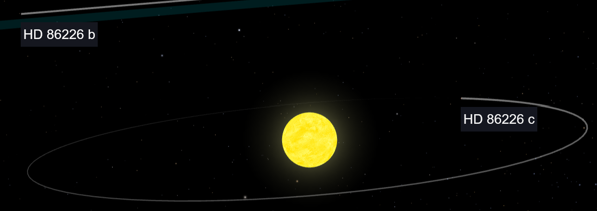
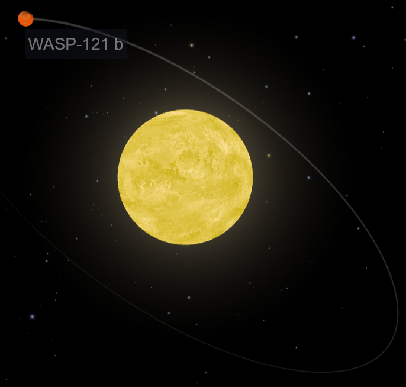
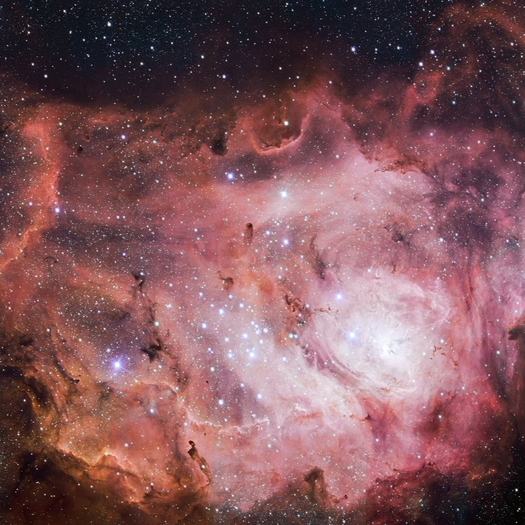
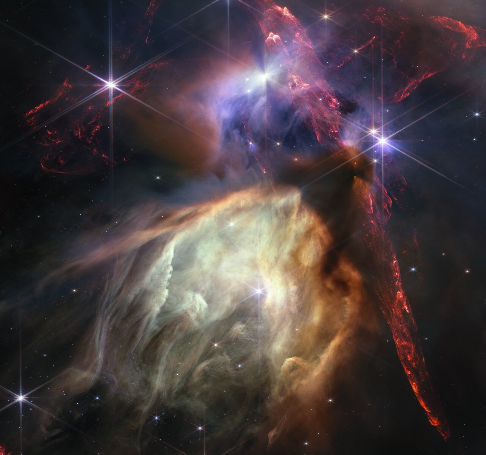

The featureless spectrum of HD 86226 c challenges sub-Neptune atmosphere trends
Image credit: NASA
I'm excited to show you some of my research projects!
They focus on understanding the population of sub-Neptune planets, and on linking present-day exoplanets to planet formation theory. I'm currently working on an atmospheric demographics study of sub-Neptunes, using data from JWST and the HST SPACE Program.
Before I joined the exoplanet world, I investigated the chemistry in star-forming regions and the effect of stellar feedback on star formation.
Just click on what interests you!




You can have a quick overview at my CV (Last update: 2026, Oct 02), or ADS entries.
Research Interests:
· Atmospheres, composition, and demographics of exoplanets ·
· All kinds of planets, but I have a soft spot for sub-Neptunes ·
· Linking star formation to present-day atmospheres ·
Education:
· PhD candidate in Astronomy (Heidelberg university) ·
· MSc in Astronomy and Astrophysics (University of Bonn) ·
· BSc in Physics (University of Bonn) ·
Community service:
· IMPRS-HD student deputy ·
· Former Exocoffee co-host ·
Happy to answer questions on both Exocoffee and IMPRS-HD!
I am happy to give science outreach talks whenever possible!
Upcoming talks:
·20. November 2026: Astronomie Stiftung Trebur ·
·24. November 2026: Starkenburg-Sternwarte e.V. Heppenheim ·
If you are looking for a speaker (german/english) for an event or teacher education, just email me.
E-mail:
kahle@mpia.de
Address:
Max Planck Institute for Astronomy
Königstuhl 17
69117 Heidelberg
Germany